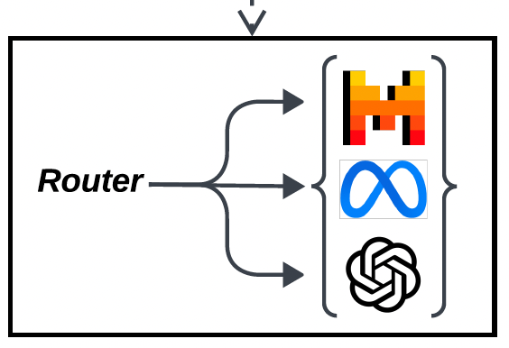
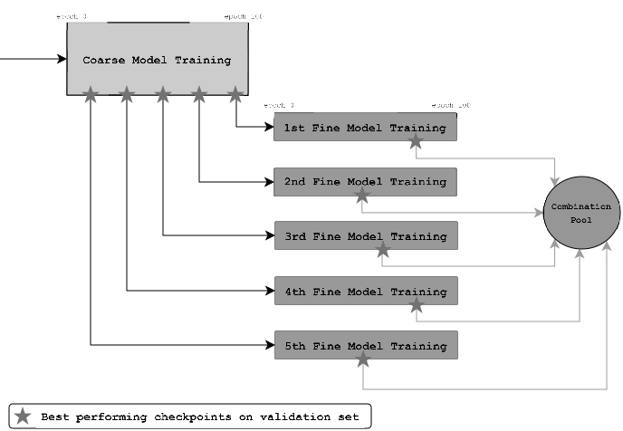

Publications
-
Towards Optimizing SQL Generation via LLM Routing Mohammedhossein Malekpour, Nour Shaheen, Foutse Khomh, and Amine Mhedhbi.
Accepted at NeurIPS 2024 Third Table Representation Learning Workshop (TRL @ NeurIPS).

-
C2F-CHART: A Curriculum Learning Approach to Chart Classification Nour Shaheen, Tamer Elsharnouby, and Marwan Torki.
Accepted at the 2024 International Conference on Pattern Recognition (ICPR).
Education

MSc. in Computer Engineering
Polytechnique Montreal - Quebec, Canada
Aug 2024 – Jun 2026
cGPA: 4.0/4.0
- Research Assistant in the Data Systems Group under the supervision of Prof. Amine Mhedhbi.
- Research Assistant at Mila, co-supervised by Prof. Sarath Chandar.

BSc. in Computer and Communications Engineering
Alexandria University – Alexandria, Egypt
Sep 2019 – Jul 2024
cGPA: 3.99 / 4.0
- Graduation Thesis: Developed a federated learning pipeline for cross-hospital digital pathology, implementing secure aggregation and client-side training on histopathology datasets. This was done under the supervision of Prof. Ayman Khalafallah.
- Ranked 3rd in class with honors.
Research & Industry Experience

Research Master's Student
Mila - Quebec AI Institute - Quebec, Canada
April 2025 – Current
- Working on different research projects.

Computer Vision R&D Engineer
Applied Innovation Center - Alexandria, Egypt
Sep 2023 – Jul 2024
- Implemented chart classification architecture using coarse-to-fine curriculum learning achieving SOTA results.
- Fine-tuned data extraction models on chart-to-table tasks using various datasets.

Machine Learning R&D Intern
Microsoft - Cairo, Egypt
Jul 2023 – Sep 2023
- Researched methods to mitigate hallucinations in LLMs using GPT meta-prompting.
- Improved hallucination rates by 60% in general summarization tasks.
- Developed components in a content filtering pipeline deployed in production using Azure.

Computer Vision R&D Intern
Mohammed Bin Zayed University of AI - Abu Dhabi, UAE
May 2023 – Jun 2023
- Collaborated on Text-to-3D Avatar Generation pipeline development.
- Fine-tuned Generative Diffusion Models for high-quality face generation from text descriptions.
- Developed evaluation metrics for prompt-driven 3D avatar generation quality assessment.

NLP & Data Science Intern
ArabEasy LLC - Sharjah, UAE (Remote)
Mar 2023 – May 2023
- Researched reinforcement learning applications in training LLMs for neural machine translation.
- Implemented fine-tuning of transformer-based LLMs for Arabic to English translation.
- Conducted literature reviews on reinforcement learning and neural machine translation.
Computer Vision R&D Intern
Applied Innovation Center - Alexandria, Egypt
Jul 2022 – May 2023
- Developed and evaluated deep learning models for semantic segmentation of high-resolution remote sensing imagery.
- Explored literature on semantic segmentation, feature extraction, and domain adaptation techniques.
- Implemented ensemble methods to enhance model inference accuracy.
TAships
INF3710: Files and Databases
Polytechnique Montreal
Description: Introduction to files and databases: needs analysis via the entity–relationship model; relational model and relational algebra; SQL DDL/DML and embedded SQL; concurrency control and transaction management; relational schema design (functional dependencies and normal forms); storage models and file structures; indexing and hashing.
- Fall 2024 — TA for Prof. Amine Mhedhbi
- Winter 2025 — TA for Prof. Omar Abdul Wahab
- Summer 2025 — TA for Prof. Franjieh El Khoury